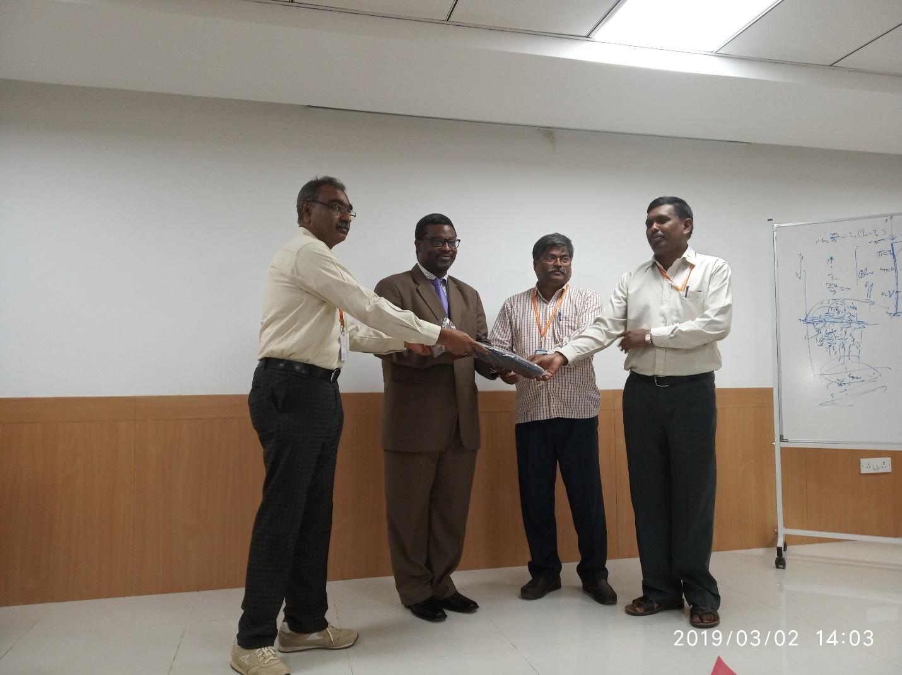

National Science Day and Felicitation of Prof:JUNJAPPA
The Department of Biochemistry, School of Applied sciences organized the
felicitationof Prof. Junjappa, INSA honorary scientist, REVA Universityon 28th
February 2019 which is also celebrated as National Science Day 2019at 1st Floor
Seminar hall, REVA University. The function was presided by Dr. P.Shyama Raju,
Honorable Chancellor, REVA University. Dr. S.Y.Kulkarni, Vice Chancellor,
REVA University graced the occasion along with other Dignitaries including
DrDhanamjaya, Registrar, REVA University, Dr. N Ramesh, Dean, Faculty of
Science and Technology, REVA University, Dr. Beena G Associate Dean, REVA
University and Directors from other departments of REVA University. Around 110
students and Faculty members were a part of this occasion of pride as Prof Junjappa
received The Lifetime Achievement Award for his commendable contributions in the field
of Synthetic Organic Chemistry at the 24th CRSI National Symposium in Chemistry held at
Chennai on February 8th, 2019. The theme for National Science Day 2019 was “Science for
the People and the people for Science”.Prof Junjappa is a living example for the theme
as he epitomises the triumph of will over constraints, of genius over circumstances. T
he Seminar hall was named as Dr H Junjappa Seminar Hall henceforth by our Honorable
Chancellor Sir in honour to his legacy.


Report on Science Expo organized by M.Sc Physics students, REVA University
Event: On the occasion of National Science Day- 28th February 2019, M.Sc. Physics students organized a science exhibition under the guidance of Dr. Upendra Kumar Kagola.
Purpose: To promote scientific awareness and curiosity in the young minds.
Venue: Govt. Higher Primary School (KGHPS), Kattigenahalli, Bengaluru.

The trip commenced by the students gathering at School of Applied sciences, REVA University, and moved to the school by college bus. Many basic science models, charts, and presentation were prepared by M.Sc students to showcase and demonstrate which covers the broad area of physics such as Gravitation, Optics, Electricity, Mechanics etc.
The school faculty and children were gathered for formal inauguration anchored by our PG students, Annapoorna and Manjunatha. The school Headmistress, R. Sudhasini addressed the importance of event to children. After that a power point presentation on the revolution of science and technology since stone age to present era was given by our PG students.
The exhibition of all science models were arranged in the school corridor and science behind the models were clearly demonstrated to the school kids. The children and the staff of the school were very supportive and cooperative throughout the day.
The school children of 6th and 7th standard are also organized and performed scientific models of physics, chemistry, and biology.
It was a great learning experience for all the students. Everyone took part actively and enthusiastically. All are really enjoyed a lot. After completion of the demonstrations, feedback has also been taken from the school faculty. The science models prepared by our PG students were donated to the school as a token of memory. After that we had the photo session with all faculty and students and return to REVA University by evening with great satisfaction.
MATHEMATICS
The department of mathematics, School of Applied Sciences, REVA University organized an expert talk on “Fluid Dynamics” on 2nd March 2019 at Dr Junjappa seminar hall t 10.30 PM. The guest of honor was Prof. Makinde. He is presently a Distinguished Professor of Applied and Computational Mathematics at the faculty of Military Science, Stellenbosch University, South Africa.
The event was started with welcome address by the Coordinator Dr. HaishBabu G A, followed by introduction of the guest of honor Prof. Makinde by Dr. Vishu Kumar M, then Prof. Makinde started the session. He explained on the boundary layer theory, Viscous and non viscous fluids and Newtonian and Non Newtonian fluids and the basics of fluid dynamics. All the students were inspired in his session, and looking forward to it.Then he concluded the session with a real life application of fluid dynamics, in which students found that the whole the information was very interesting. The guest received token of appreciation from teachers. At last the session was concluded by the vote of thanks rendered by Dr. Nagamaruthi Kumari.

DEPARTMENT OF BIOTECHNOLOGY
SCHOOL OF APPLIED SCIENCES, REVA UNIVERSITY, BANGALORE-560064
Report on Industrial Visit to “Bhat-Biotech India [P] Ltd...” on 22nd February 2019
The Department of Biotechnology, School of Applied Sciences with an objective of providing Internship, Training, conducting Skill Development Program and industrial visit for students got the opportunity to visit Bhat-Biotech India [P] Ltd at Electronic City, Bengaluru. Prashantha CN, Assistant Professor, Department of Biotechnology had scheduled the visit forB.Sc Bioinformatics 2nd Semester Students on 22nd February 2019.
The company Product Manager Dr.K V Vinay had given orientation about the Bhat-Biotech company, Research, Products, training and consultancy services.
The company is introduced various divisions in the organization include
• Antibody production Unit
• Cell-culture Laboratory
• Molecular Biology Laboratory
• Product Development division
• Preparation of Diagnostics kits and Reagents
The company has various products such as
• OTC Products: Bhat Glucoscan, Urine strips, Fertility Range
• Diagnostic Products: Rapid, ELISA, Hematology, Serology
• Recombinant proteins and reagents
• HIV range in card, spot and ELISA formats.
• Pregnancy range in card and dipstick, formats.
• Hepatitis range in card, dipstick and ELISA formats.
• Malaria test kits-both antigen and antibody tests.
• Bio-Chemistry test kits.


Students have learned and understand the practical concepts of molecular biology techniques in industrial applications and also the process of utilization of various techniques on Biotechnology and bioinformatics. Production of antigens in animal and E.coli cells and their applications for the detection of HIV, Malaria, Syphilis, etc. They also work on methods that allow protein production in soluble form and not completely in inclusion bodies using different methods that include studies on the precipitation behaviour of the eluted protein, use of different strains of bacteria where the protein is produced etc.


Science Day Celebration-2019
Coordinator: Dr. Hareesh.K
Organised by: School of Applied Sciences (Physics) in Association with Centre for Nano and Soft Matter Sciences
Venue: C N R Roa Seminar Hall, C V Raman Block
Date: 1st March 2019
The program was inaugurated and graced by Chancellor Dr.P.ShymaRaju, Vice Chancellor Dr.S.Y.Kulkarni, the Registrar Dr.M. Dhananmjaya, Dean Science and technology Dr.N.Ramesh the chief guest Dr. Yellammagad, Dr. Angappane S and Dr.Beena.
After inauguration Keynote note lecture was given by Dr. Angappane S, Scientist, Centre for Nano and Soft Matter Sciences Bangalore on Solar cells. He started with the theme of the science day “People for Science and Science for People” emphasising how science benefits the growing technology and makes the life easy. He gave the brief introduction about semiconductors, constructing the solar cells, working of solar cells, how the efficiency of the solar energy got improved by bringing modifications while preparing the solar cells, where does India stand in solar cell manufacturing, etc. The students were very enthusiastic after listening to solar cells lecture by Dr. Angappane S.
Dr. Yellammagad C V, Professor, Centre for Nano and Soft Matter Sciences, Bangalore, gave a lecture on Liquid crystals: Life Science and Technology. He spoke about liquid crystals. Where liquid crystal exists in human body, and day to day life applications. Even the soap we take to clean ourselves is an example for liquid crystal and the TV screen we watch regularly and the smart mobile screen is liquid crystal. The type of liquid crystal and its classification based on its orientation was explained in detail. His lecture was highly energetic and motivating which gave the glimpse of Liquid crystals in life science and technology.


DEPARTMENT OF BIOTECHNOLOGY
SCHOOL OF APPLIED SCIENCES, REVA UNIVERSITY, BANGALORE-560064
Report on National Science Day Celebration 2019
The National Science Day celebration in the School of Applied Science was conducted by the Department of Biotechnology on 28.02.2019. The celebration was commenced through organising events like Model making, Collage Making, Quiz, Spell Bee and Just A Minute. The objective behind conducting these events was to bring awareness and information regarding distinct features of science. There students from both UG and PG of Biotechnology and Biochemistry department actively participated in entire events with full enthusiasm and won prizes.
In continuation to the different competitions, a guest talk was organized in the noon session by
Dr. N. Bakthavatsalam (Principal Scientist & Head, Division of Germplasm, Conservation and Utilisation, NBAIR, Bangalore). The chief of the event spoke about the topic “Insects: Boon or Bane” which was an informative session for both students and faculties. The session was interactive as well.